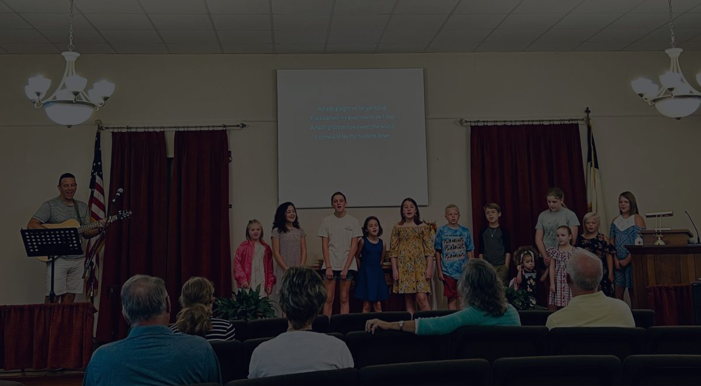

Established in 1865
Fillmore Christian Church is a small-town congregation centered on Scripture, prayer, fellowship, and the good news that Jesus is the Christ, the Son of the Living God.
What to expect
Our services are simple and reverent: Scripture read and preached, prayer, congregational singing, and the Lord's Table as a response to the Word.
Whether you have followed Christ for years or are just beginning to ask questions, you are welcome here.
See what's happening at Fillmore Christian Church and find ways to connect with our community.
View EventsWe would love to pray for you. Send us your prayer requests and our church family will lift you up.
Send RequestMissed a Sunday? Listen to recent sermons and stay connected with our teaching throughout the week.
Listen NowClasses for learning Scripture together before worship.
Gather with us for prayer, singing, communion, and preaching from Scripture.

Stay connected
Past sermons are available on the website and through the podcast feed so you can listen during the week and revisit the teaching archive anytime.
Open Sermon ArchiveGiving online is safe and easy. Your generosity supports the ministry and mission of Fillmore Christian Church.
Give NowWe would love to hear from you. Whether you have a question, need prayer, or want to plan a visit, reach out anytime.